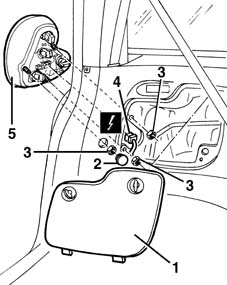
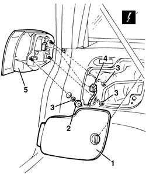

5540A44 L/H OR R/H TAIL LIGHT (ONE) - R+R
- Path
- Procedures > 55 ELECTRICAL EQUIPMENT > 5540 EXTERIOR LIGHTING > 5540A LIGHTING > 5540A44 L/H OR R/H TAIL LIGHT (ONE) - R+R
- Kind
- repair procedure (removal / refitting; the operation number is the code)
- Applies to
- all engines; all production periods
- Interactive page
- https://sloeber94.github.io/elrnDB-fMltpl/en/#/2891918
Applies to: all engines; production: fino a 05/99, da 09/03, da 06/99 a 03/02, da 04/02 a 08/03, fino a 05/04
 Removing
Removing
 Refitting
Refitting1. Open the tailgate and remove the side cover.
2. Remove the rubber cover.
3. Undo the nuts fixing the light cluster.
4. Move the light cluster slightly and disconnect the electrical connection.
 | Name | Connector |
|---|---|---|
4 | Rear left light cluster |
| Name | Connector |
|---|---|---|
4 | Rear right light cluster |
5. Recover the light cluster.

Applies to: all engines; production: fino a 05/99, da 09/03, da 06/99 a 03/02, da 04/02 a 08/03, fino a 05/04
Refitting
RemovingCheck that the light cluster is not damaged.
Fit the rear light cluster fixing it using the nuts.
Connect the electrical connection.
Fit the rubber cover.
Check the operation of the rear lights.
Refit the side cover.
Applies to: all engines; production: da 06/04
Removing
Refitting1. Open the tailgate and remove the side cover.
2. Release the rubber cover.
3. Undo the nuts fixing the light.
4. Move the light slightly and disconnect the electrical connection.
Description | Connector | |
|---|---|---|
4 | Left rear light cluster |
Description | Connector | |
|---|---|---|
4 | Right rear light cluster |
5. Keep the light.

Applies to: all engines; production: da 06/04
Refitting
RemovingCheck that the light is not damaged.
Fit the rear light securing it using the nuts.
Connect the electrical connection.
Fit the rubber cover.
Check that the rear lights are working.
Refit the side cover.